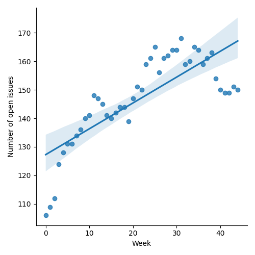
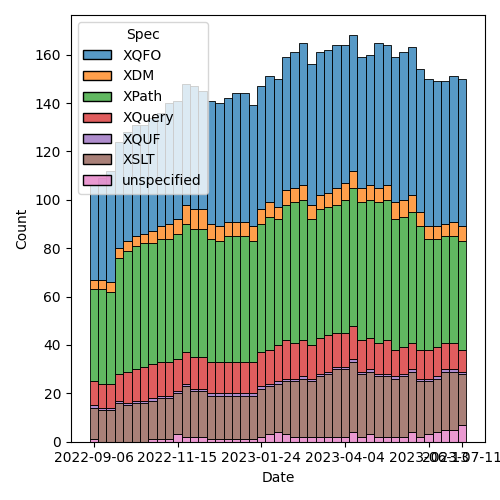
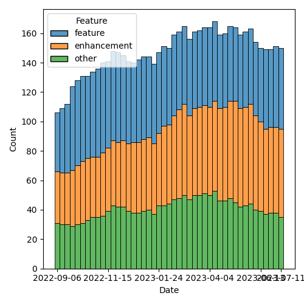

QT4 CG Meeting 042 Minutes 2023-07-18
Table of Contents
Agenda index / QT4CG.org / Dashboard / GH Issues / GH Pull Requests
Draft Minutes
Summary of new and continuing actions [0/5]
[ ]QT4CG-002-10: BTW to coordinate some ideas about improving diversity in the group[ ]QT4CG-016-08: RD to clarify how namespace comparisons are performed.[ ]QT4CG-026-01: MK to write a summary paper that outlines the decisions we need to make on “value sequences”- This is related to PR #368: Issue 129 - Context item generalized to context value and subsequent discussion.
[ ]QT4CG-029-07: NW to open the next discussion of #397 with a demo from DN See PR #449[ ]QT4CG-039-01: NW to schedule discussion of issue #52, Allow record(*) based RecordTests[ ]QT4CG-042-01: NW to use sequences instead of arrays inparse-urioutput.[ ]QT4CG-042-02: NW to make the query into a simple map with repeated values.[ ]QT4CG-042-03: NW to consider revisions to query parses.
1. Administrivia
1.1. Roll call [9/11]
[X]Reece Dunn (RD)[X]Sasha Firsov (SF)[X]Christian Grün (CG)[X]Joel Kalvesmaki (JK) [0:05-][X]Michael Kay (MK)[X]John Lumley (JL)[X]Dimitre Novatchev (DN)[ ]Ed Porter (EP)[X]C. M. Sperberg-McQueen (MSM)[X]Norm Tovey-Walsh (NW). Scribe. Chair.[ ]Matt Patterson (MP)
1.2. Accept the agenda
Proposal: Accept the agenda.
Accepted.
1.2.1. Status so far…

Figure 1: “Burn down” chart on open issues

Figure 2: Open issues by specification

Figure 3: Open issues by type
1.3. Approve minutes of the previous meeting
Proposal: Accept the minutes of the previous meeting.
Accepted.
1.4. Next meeting
The next meeting is scheduled for Tuesday, 25 July 2023.
No regrets heard.
Reminder: the CG will take a vacation for four weeks in August. We will not meet on 1, 8, 15, or 22 August.
1.5. Review of open action items [1/6]
[ ]QT4CG-002-10: BTW to coordinate some ideas about improving diversity in the group[ ]QT4CG-016-08: RD to clarify how namespace comparisons are performed.[ ]QT4CG-026-01: MK to write a summary paper that outlines the decisions we need to make on “value sequences”- This is related to PR #368: Issue 129 - Context item generalized to context value and subsequent discussion.
[ ]QT4CG-029-07: NW to open the next discussion of #397 with a demo from DN See PR #449[ ]QT4CG-039-01: NW to schedule discussion of issue #52, Allow record(*) based RecordTests
1.6. Review of open pull requests and issues
The following PRs are open but have merge conflicts or comments which suggest they aren’t ready for action.
- PR #538: Attempt to allow xs:string to be 'promoted to' xs:anyURI
- PR #368: 129: Context item generalized to context value
- PR #546: 414: Attempt to implement expanding the allowed character repertoire
The following substantive PRs were open when this agenda was prepared.
- PR #614: 123: fn:duplicate-values
- PR #609: 508: New Map & Array Functions: Inconsistencies
- PR #603: 602 Implausible Expressions
- PR #589: 561: abbreviation fn=function, drop lambda syntax
- PR #575: 359: fn:void: Absorb result of evaluated argument
- PR #533: 413: Spec for CSV parsing with fn:parse-csv()
- PR #529: 528: revision of json(), and renaming to xdm-to-json()
The following editorial or otherwise minor PRs were open when this agenda was prepared. The chair proposes that these can be merged without discussion.
- PR #612: 128: fn:replace: Tweaks
- PR #611: 329: Keyword parameters: Error codes
- PR #610: 506: fn:error: parameter names
- PR #607: XQFO Examples: Fixes, Formatting
- PR #606: Allow element(A|B) and attribute(A|B)
- PR #605: 21: Revise appendix for reserved function names
- PR #604: [Editorial] Drop the unused symbol URILiteral from the XPath grammar appendix
During the meeting, the committee added:
- PR #615: Xdm minor edits, chh. 3-5
Proposal: Accept these PRs.
Accepted.
It has been proposed that the following issues be closed without action. If you think discussion is necessary, please say so.
- None at this time
The following PRs appear to be candidates for a future XSLT-focussed meeting.
- PR #599: 90: Simplified stylesheets with no xsl:version
- PR #470: 369 add fixed-prefixes attribute in XSLT
- PR #412: 409, QT4CG-027-01: xsl:next-match
NW proposes another XSLT-focused meeting in mid-September
2. Technical Agenda
2.1. Issue #566: fn:parse-uri, fn:build-uri: Feedback
See Issue #566, in particular comment comment #3.
Norm introduces the open questions from the comment.
- RD: Would it make sense to have some of them as additional helper functions?
- NW: Could do.
- MK: Could put the function in the map, but it’s not clear that’s better.
- JL: When you’re talking about symmetry with
build-uri(), is it the case that we need to say what the mininum pieces must be to be unique. - NW: Not exactly,
build-uri()takes advantage of different pieces if they’re available. - CG: It could be a good idea to raise errors if it’s inconsistent.
- MK: I think it’s probably better to ignore things we don’t need rather than validate.
- NW: That’s my position too.
- RD: In some cases when calling
build-uri(), you may have only some of the values. I agree that they should be allowed and precedence applied.
Some review/discussion of the build-uri() function.
- NW: Remove the URI value?
- MK: I think it’s probably useful.
- CG: My thought here was that we don’t have any other function that
returns the value. If you use
build-uri(), then it could be confusing. - NW: I can see that.
- JK: What about non-ASCII characters?
- NW: They’re decoded in the values where it’s not ambiguous.
Should path-segments be an array or a sequence?
- NW: I confess, I made it an array simply so that it’s easier to serialize as JSON.
- JL: I’d be inclined to make them sequences if it’s possible. We tend to use arrays where the sequence isn’t adequate.
- MK: I think we should address the serialization problem by fixing the serialization functions.
ACTION QT4CG-042-01: NW to use sequences instead of arrays in parse-uri output.
Should query-segments be an array of maps or a simple map?
- NW: I can see the appeal of a simple map, though it loses the ability to distinguish the order of repeated query keys.
- RD: I think the more common case with repeated values is having them as a grouped value set.
- MK: I’d vote for supporting the common case well.
ACTION QT4CG-042-02: NW to make the query into a simple map with repeated values.
Some discussion of the cases where you do want to distinguish them.
- JL: In the case where there are multiple keys with the same name, you need to know the order sometimes. For example, if the parameters are drilling down into a query.
- MSM: I’m obsessing about that corner case too, because I know I’ve done it in the past. I’ve done CGI scripts that relied on the sequence of segments in the query.
- RD: Would it make sense to make this an option?
- NW: We could, but I’d rather not. That’s just choosing not to decide!
- RD: Would it make sense to have a parse query function?
- SF: Calling the property
query-parameterswill be more familiar to many users. - SF: We’re introducing
parse-uri()with different parameters. Query segments could be in addition to query parameters. - NW: Yes, could do.
- MSM: I feel better writing it myself if it’s a simple function. SF’s suggestion appeals to me. If we don’t do that, I still think the name query parameters is better is better for the single map.
ACTION QT4CG-042-03: NW to consider revisions to query parses.
- CG: Maybe we could add an example of parsing the query stringto preserve order?
2.2. Namespace comparisons in HTML
RD requested discussion per his action QT4CG-016-08.
- RD: How should HTML attributes that are namespaces be interpreted?
In the XML serialization of HTML, that’s straightforward. But when
using the HTML parser, the namespace attributes are treated as
ordinary attributes. So from the HTML5 perspective, there are no
namespaces. What it does instead is treats namespaces implicitly.
- … It always puts HTML in the HTML namespace and does that implicitly for a selection of attributes.
- … The issue really is around the namespaces that don’t fall under those umbrellas. What should we do?
- … HTML5 says they should be treated as ordinary attributes which means that they’re not visible to the XML processor. If we do try interpret them as namespaces, which is what the current spec does, you could potentially have an invalid document because it’s missing a namespace declaration or something.
- … We could align the namespace processing with the HTML spec. Or we could default to that and have an option to let users tell us to parse namespaces.
- SF: Have two options, one to inherit and a second is allowed to enforce default namespaces. Enumerate a list that would be a match with HTML.
- MSM: If I’m understanding correctly, RD is suggesting an option that allows us to ingest a document and treat the namespace declarations as general attributes. I don’t know how to make a XDM instance without resolving namespaces correctly.
Example from the Zoom chat:
<foo:bar xmlns:foo="ns-foo"/> <baz xmlns="ns-something"/>
- RD: It depends on whether the document is using the XML parser or
the HTML parser. If using the XML parser then it’ll be treated like
a namespace as normal. Under the HTML5 parsing rules, the foo:bar
would be the local name. In the HTML spec, they suggest using an
escape sequence for the colon, something like
\x. The XML namespace attributes are within the attribute list.- … That’s still going to be problematic.
- NW: If you put namespace declarations in the attributes, I think that way lies madness. Just throw them away and apply the HTML namespace rules.
- MSM: What do you do about “foo:bar” as a tag name?
- NW: I don’t know, just replace the colons with something else.
- MSM: I would like to avoid allowing “foo:bar” as an NCName is the worst outcome.
Some discussion about whether or not the form of escaping provided by HTML5 will work for us or not. It’s implementation dependent.
- SF: There are several APIs that allow you to define the namespace
resolver. That’s important if you do the transformation and you want
to get the right namespaces for all elements. We could provide a
default function for this but also allow users to define their own.
- … But that would require namespace resolver to be part of the transformation and query API; I‘m not sure if that would work.
- … It would need to be defined both declaratively and imperatively.
- NW: Could do that for the parse function I guess.
Some discussion about whether or not this applies to just the parse-html function or also applies during transformations because the source DOM came from the browser.
- MK: I’d prefer for something less complicated than a resolver.
- RD: We can always have a proposal for that later.
- … So in terms of the local names; keep the escaping that makes them valid NCNames.
- … And namespace attributes are dropped.
General agreement.
2.3. PR 614 duplicate values
CG introduces the issues, #123
- CG: I’ve had two uses in the last year or so where this would have been useful.
- … Duplicate values returns all values that occur more than once in the sequence.
- … There are some examples in the notes.
- … Like distinct-values, 1, 1.0, and 1.0e0 are all the same.
- … One use case is to look for duplicate @id values.
- JK: An excellent function, I’ll use it a lot. I’m glad that it’s simple; when we were talking about histograms, I think we were getting off the path. But would it be nice to have some way of getting the most duplicate values.
- CG: I think that could be easy.
- MK: I vote for keeping it simple.
- JL: I can see an argument for returning all the values that are duplicated, then you can find the arity of the sets easily.
- DN: I agree with MK that it is good if the function is simple. I
think the proposal JK makes could be implemented in a histogram
function that returns all of the frequencies of all the items in the
sequence.
- … Histogram functions have a slightly different purpose.
Accept this PR?
Accepted.
3. Any other business?
None heard.